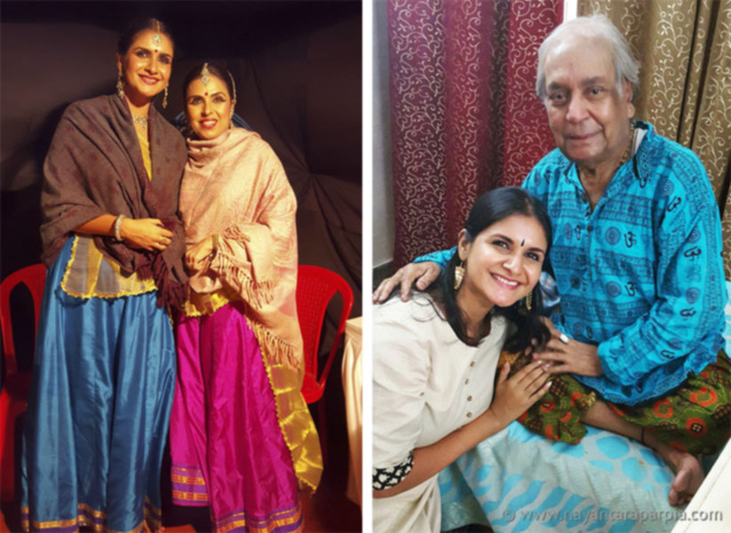

Profile
Nayantara Parpia is a young and upcoming Kathak dancer with a vibrant and energetic stage presence that leaves a striking impression on her audiences.
 Nayantara Parpia
Nayantara Parpia
Training
 Nayantara with both her gurus, Smt. Yogini Gandhi & Pt. Birju Maharaj
Nayantara has trained in the Lucknow gharana of Kathak since the age of 7, under the tutelage of renowned Kathak exponent, Smt. Yogini Gandhi, at her institute ‘Kalanidhi’ in Pune. She is now training under the legendary maestro, Padma Vibhushan Pandit Birju Maharaj, at ‘Kalashram’ in New Delhi. She has regularly attended workshops conducted by stalwarts such as Prerana Shrimali, Aditi Mangaldas, Smt. Sitara Devi, Smt. Kumudini Lakhia, Smt. Geetanjali Lal, Pt. Rajendra Gangani, Smt. Shama Bhate, Dr. Kanak Rele, Smt. Mandakini Trivedi and Dr. Pappu Venugopala Rao.
Performing experience
 Performing at the Singapore Indian Fine Arts Society
Performing at the Singapore Indian Fine Arts Society
Since 2004, Nayantara has been performing as one of the lead dancers in the Kalanidhi troupe, and has travelled and performed extensively with her Guru at various festivals, concerts, corporate shows and lecture demonstrations across India. She also has many solo Kathak performances to her credit in India, Singapore and the UK. Some of her recent performances include:
- Raindrops Festival at Ravindra Natya Mandir, Mumbai
- Aura-Aurangabad Festival at MAHAGAMI Gurukul, Aurangabad
- Vedvyas Sangeet Nrutyotsav, Rourkela, Orissa
- 3rd Korean-Indian Cultural Festival, Pune
- Nritya Sabha Festival, Pune
- Sandhana Festival at Sangeet Natak Akademi, New Delhi
- Pancha Tatva Festival, Mumbai
- Prayatna Festival, Pune
- World Culture Festival, New Delhi
- Subah-e-Benares, Varanasi
- South Africa India Tourism Conference – A Collaboration with the Boombay Djembe Folas, Mumbai
- Kathak Mehfil at Kalaa Utsavam Indian dance and music festival at the Esplanade Theatre, Singapore
- Nrityanjali at the Singapore Indian Fine Arts Society (SIFAS)
- Enna Nadakkuthu TV show on Vasantham channel, Singapore
- Sanskar Bharati at Mrutyunjayeshwar Temple, Pune
- Mid Autumn Festival at Gardens by the Bay, Singapore
- Michael Faraday School, London, UK
- Swar Sadhana Samiti, Mumbai
Nayantara has also performed Kathak in renowned Bollywood film director, Sanjay Leela Bhansali’s 2015 blockbuster Bajirao Mastani, under the choreographic direction of her Guruji, Pandit Birju Maharaj.
Awards and Titles
 Performing at Kalaa Utsavaam Festival at the Esplanade Theatre in Singapore
Performing at Kalaa Utsavaam Festival at the Esplanade Theatre in Singapore
Nayantara has been awarded the title of Nritya Shree in 2010 by Utkal Yuva Sanskrutik Sangh at the Cuttack Mahotsav, recognized by UNESCO. She has won top prizes at a number of All-India classical dance competitions organized by Swar Sadhana Samiti, Brahmanaad and Akhil Bharatiya Sanskrutik Sangh.
Teaching Experience
 Nayantara along with musicians conducting her students’ performance in Singapore
Nayantara along with musicians conducting her students’ performance in Singapore
Besides being a performer, Nayantara is a very passionate teacher, and has been imparting training in Kathak to young children and adults for over 10 years. After assisting her Guru at Kalanidhi, Pune for 5 years, Nayantara went on to start her own school for Kathak in Pune in 2009. In 2013 she moved to Singapore where she was based for over 2 years. There, she started and nurtured the Kathak department in one of the oldest and most prestigious Indian classical dance institutes in Singapore, Apsaras Arts.
Now, back in Pune, Nayantara has registered her own school, Tridhaara Institute of Kathak, where she stresses not only on Kathak, but also simultaneous training in Yoga and Hindustani classical music, for a holistic approach to classical dance.
Some of Nayantara’s teaching assignments:
- Both, in India and Singapore, Nayantara has presented her students in many annual stage performances as well as national level competitions where they have won top prizes.
- Nayantara choreographed the Kathak segment for the opening ceremony of the Indian Heritage Centre in Singapore, a grand event that involved 80 dancers over 5 Indian classical dance styles.
- Nayantara has worked with Teach For India in a project to train a group of young children from low-income communities, culminating in a stage performance with live musical accompaniment for a major annual Teach For India event.
- She is often invited to conduct Kathak workshops and lecture demonstrations for dancers of various levels. Some of the institutes she has worked with are:
- Future School of Performing Arts, Mumbai
- Sumeet Nagdev Dance Arts, Mumbai
- Taraana Academy of Kathak, Chennai
- Tarana Indian Dance School, Toronto
- East West School of Dance, New York City
- Michael Faraday School, London
- Symbiosis Centre for Media and Communication, Pune
Education
 Nayantara Parpia
Nayantara Parpia
She has received a Diploma with Distinction in ‘Nritya Shastra’ (Dance theory) from the Nalanda Dance Research Centre, Mumbai. Besides dance, Nayantara is also very enthusiastic about Indian classical music and is currently undergoing Tabla and Hindustani vocal training. She holds a Bachelors Degree in Economics and a Diploma in Liberal Arts, both from Symbiosis College, Pune.